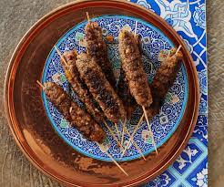

Kebab

These kofta kebabs are made with ground lamb and have 6 different kinds of spices. They are very good!
INGREDİENTS
- 4 cloves garlic, minced
- 1 teaspoon kosher salt
- 1 pound ground lamb
- 3 tablespoons grated onion
- ¼ 3 tablespoons chopped fresh parsley
- 1 tablespoon ground coriander
- 1 teaspoon ground cumin
- ½ tablespoon ground cinnamon
- ½ teaspoon ground allspice
- ¼ teaspoon cayenne pepper
- ¼ teaspoon ground ginger
STEPS
- Mash garlic into a paste with salt using a mortar and pestle or the flat side of a chef's knife on your cutting board. Mix garlic into lamb with onion, parsley, coriander, cumin, cinnamon, allspice, cayenne pepper, ginger, and pepper in a mixing bowl until well blended. Form mixture into 28 balls. Form each ball around the tip of a skewer, flattening it into a 2-inch oval; repeat with remaining skewers. Place kebabs onto a baking sheet, cover, and refrigerate for at least 30 minutes, or up to 12 hours.
- Preheat an outdoor grill for medium heat and lightly oil the grate.
- Cook skewers on the preheated grill, turning occasionally, until browned and cooked through, about 5 to 6 minutes. An instant-read thermometer inserted into the center of a kebab should read at least 145 degrees F (63 degrees C).